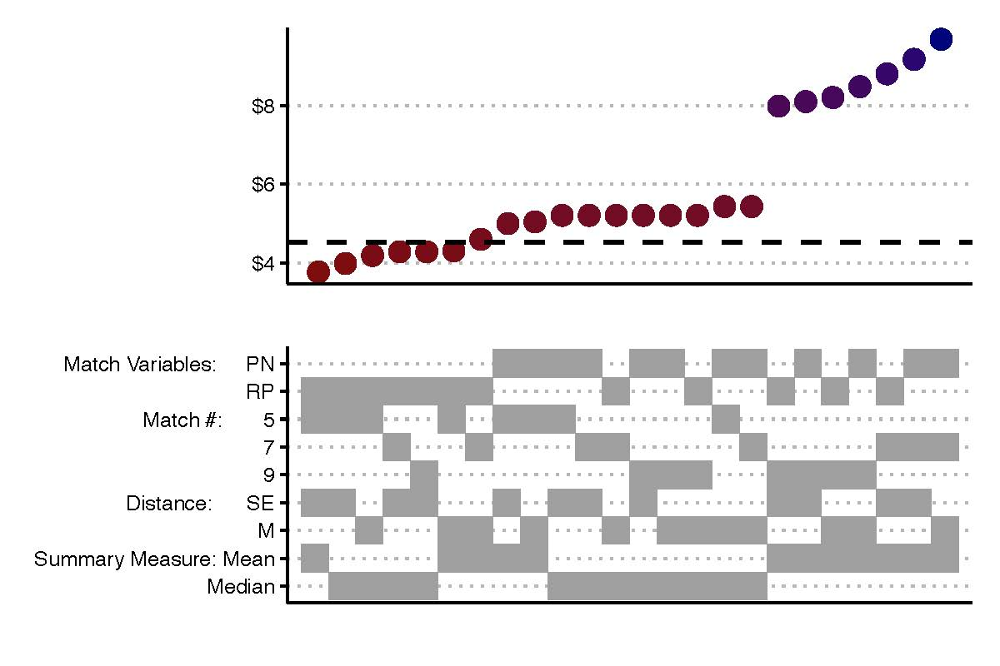

Validating Valuation: How Statistical Learning Can Cabin Expert Discretion in Valuation Disputes
Links
Abstract
This paper challenges conventional methods used in financial valuation across areas in litigation practice. We use a large-scale empirical simulation, using real firm data, to demonstrate that the widely used “comparable companies” approach allows enormous expert discretion, which enables substantial inconsistency and subjective judgment in court valuations. We then use the same simulation approach to show that using better data choices together with contemporary penalized regression methods generates valuation estimates that are considerably less variable, thereby reducing the scope for expert bias. We also apply this approach to a recent Delaware valuation dispute. This paper should transform financial valuation practice in litigation by both diagnosing and offering a cure for excessive discretion and variability in valuation disputes. Our methods would lead to better performing and more empirically grounded outcomes in legal disputes involving valuation, thus enhancing the fairness and efficiency of the judicial processes in valuation litigation.
Important figure
This figure reports the valuation estimates for Landstar \(d^*\) = 43 trading days after the end of 2017 Q4 using different input combinations. The top panel plots the estimated market value from each of the 24 combinations, which are represented by the grey tiles in the lower panel. The combinations vary based on the choice of matching feature set, number of matches, distance measure, and summary measure.
